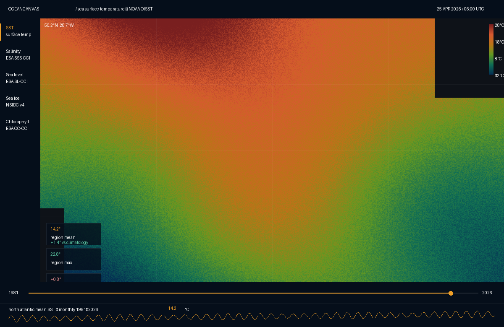
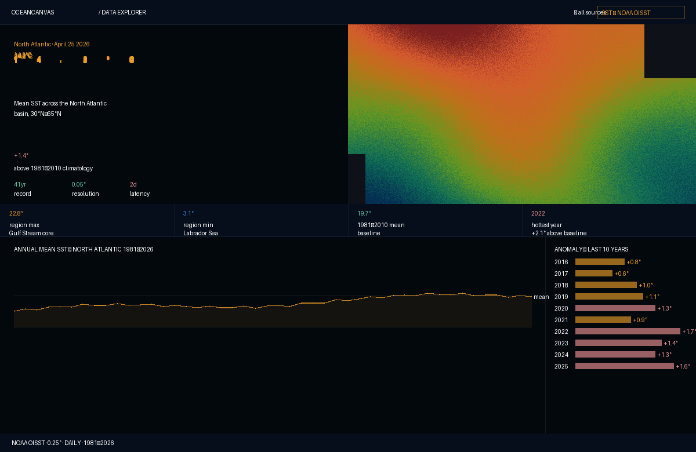
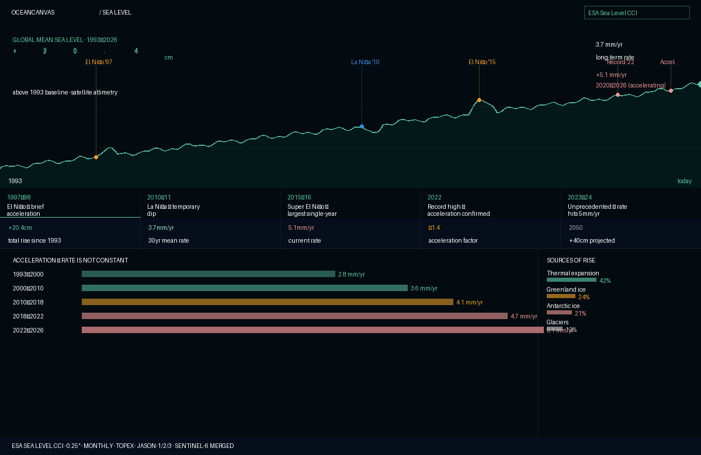
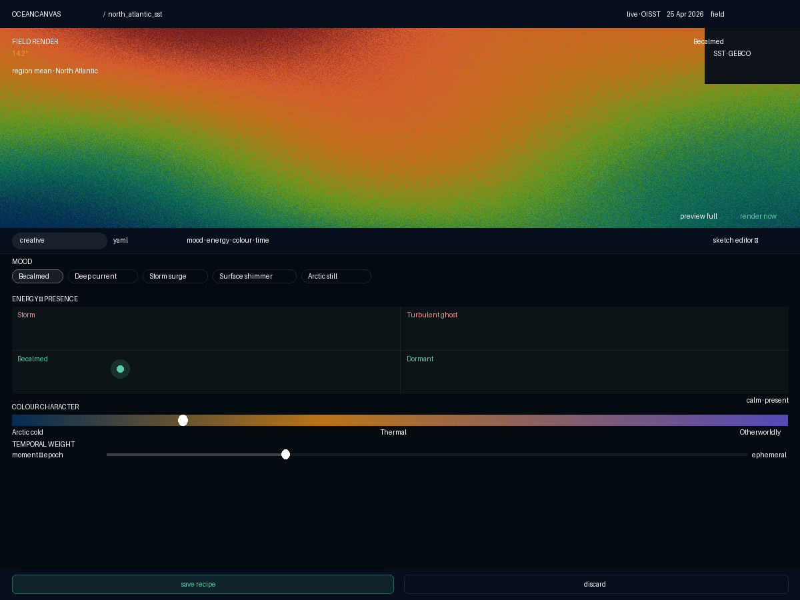
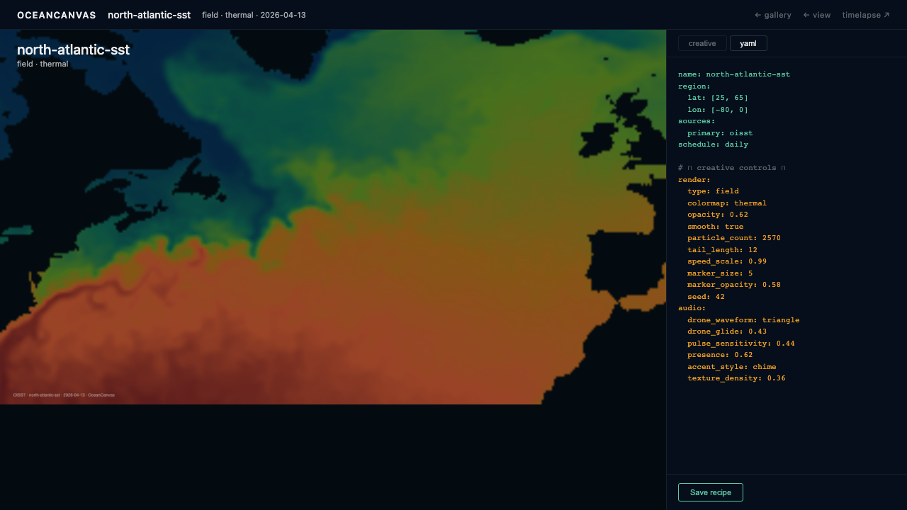
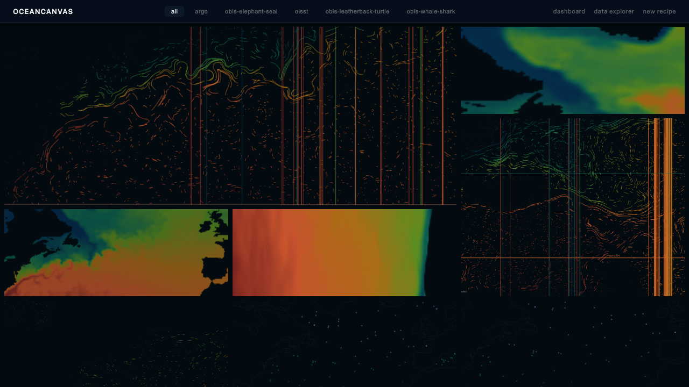
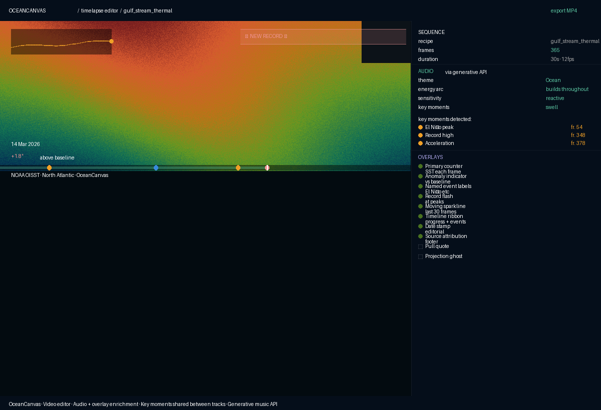

OC-02 — Project Concept
OceanCanvas — Generative Art from Open Ocean Data
April 2026 · v1.0
| This document | OC-02 — Project Concept. Describes what we are building at the idea level. Not a spec. |
| Read after | OC-01 Vision & Philosophy |
| Read before | OC-03 Data Catalog · OC-04 Technical Architecture · OC-05 Design System |
| Status | Complete — covers all four surfaces and the creative loop |
The concept
OceanCanvas turns free open-government ocean data into a living gallery of generative art. The ocean produces data every day — sea surface temperature, salinity, sea level, sea ice extent, chlorophyll blooms, current velocities. That data is precise, beautiful, and largely invisible to everyone outside the scientific community. OceanCanvas makes it visible as art.
The core idea is the recipe. A recipe is a named configuration that says: take this ocean variable, from this region, render it this way, and do it again tomorrow. The pipeline reads the recipe, fetches today's data from open government sources, generates a render using p5.js, and saves a PNG. Every day the recipe runs, the gallery grows by one frame.
A recipe is a YAML file in the
recipes/directory. It defines: which source data to use, which region, which render type, and the creative parameters that shape how the data becomes art. The pipeline renders it daily without human intervention. The user creates the recipe once; the ocean keeps feeding it.
This is what separates OceanCanvas from a monitoring dashboard. A dashboard shows you the ocean as data — numbers, charts, maps. OceanCanvas shows you the ocean as art — something you look at rather than read. The scientific precision is preserved. The visual experience is completely different.
The creative material — open ocean data
All data used by OceanCanvas is free, open, and requires no registration or API key. The sources are government and intergovernmental scientific archives — NOAA, NASA, ESA, the Argo programme, GEBCO.
| Source | What it offers |
|---|---|
| NOAA OISST | Sea surface temperature. Global, 0.25° resolution, daily since 1981. Thermal colour fields, the Gulf Stream as art, anomaly maps. |
| ESA SST-CCI | Gap-free SST at higher resolution (0.05°). Useful for detailed regional work. |
| ESA OC-CCI | Ocean colour / chlorophyll concentration. Captures the spring phytoplankton bloom. |
| ESA Sea Level CCI | Sea level anomaly grids + global mean sea level time series. |
| ESA SSS-CCI | Sea surface salinity. The Amazon freshwater plume extending into the Atlantic. |
| NSIDC Sea Ice v4 | Sea ice concentration. The Arctic minimum in September; the Antarctic maximum in March. |
| OSCAR Currents | Near-real-time surface current vectors. Natural for particle flow animations. |
| Argo Floats | ~4000 autonomous floats. Point scatter renders — the observing network is itself visually compelling. |
| GEBCO | Global bathymetry at 450m resolution. Depth as contours underlying every surface render. |
| Open-Meteo Marine | Wave height, wave period, wind speed. Scalar time series used as audio drivers in the video editor. |
The data is described in full in OC-03 (Data Catalog).
The creative loop
OceanCanvas is designed as a closed loop. The user explores data, creates a recipe, watches the pipeline render it daily, sees the renders accumulate in the gallery, and assembles them into a timelapse film. The film reveals patterns over time, which prompts new recipes. The loop feeds itself.
| Step | What happens |
|---|---|
| 01 Explore | The dashboard shows the live ocean — today's SST, sea level, chlorophyll, ice. Editorial spreads tell the story of each source with current data and historical context. |
| 02 Compose | The user draws a region on the dashboard map and opens the recipe editor. They pick a render type, select a mood preset, adjust energy and colour character. The live preview shows today's actual data rendered in real time. The recipe is already alive before it's saved. |
| 03 Commit | The user saves the recipe — a short YAML file committed to the recipes/ directory. The pipeline picks it up at the next daily run. |
| 04 Render | The Prefect pipeline runs at 06:00 UTC. It fetches fresh data, processes it, builds the render payload, runs the p5.js sketch through Puppeteer, and saves the PNG. Every recipe gets one frame per day. |
| 05 Accumulate | Each day adds one frame. 30 days of renders is a month of the ocean. 365 frames is a year. The gallery shows the collection — a living archive that grows automatically. |
| 06 Assemble | The video editor assembles a recipe's frames into a timelapse. The user adds a generative music track and data overlay annotations. The exported MP4 tells the story of the ocean over time. |
| 07 Loop back | The timelapse reveals things the individual frames do not — the rhythm of the seasons, the build of an anomaly, the precise moment a record is broken. These observations prompt new recipes. |
Surface 1 — Dashboard: the data explorer
The dashboard is where the creative process begins. It shows the ocean as it is today — live data from all active sources, presented editorially. The design philosophy: data is the hero, numbers appear at display scale, the canvas is always dark.

Fig 1. Dashboard overview. Full-bleed SST heatmap dominates the canvas. Source rail at top selects the active dataset. Floating stats overlay shows key numbers at display scale. The 41-year timeline scrubber below the map enables historical exploration.The dashboard is not a monitoring tool. It is an exploration tool — a way to understand what the ocean looks like today and how it has changed over time.
Main view
The primary view is a full-bleed spatial map — today's data for the selected source rendered as a colour field across the full ocean basin. The map is interactive: hover reveals coordinates and data values. A source rail along the top switches between available datasets.
Editorial spreads
Each source has a dedicated editorial spread — a full-page layout that presents the data with journalistic authority.

Fig 2. SST editorial spread. Temperature field at full width. 14.2°C at 72px. +1.4° anomaly in coral. 41-year trend chart below. The spread reads like a magazine page, not a dashboard panel.
Fig 3. Sea level editorial spread. The 30-year rise curve is the hero — +20.4cm at display scale, +3.7mm/yr acceleration rate. Data points to events: the 1997 El Niño, the 2010 La Niña, the acceleration post-2015.From dashboard to recipe
The user draws a bounding box on the map. The lat/lon bounds pass directly to the recipe editor as the starting region. The transition is immediate: what you see on the dashboard is what the recipe editor shows in its live preview.
Surface 2 — Recipe editor: the creative studio
The recipe editor is where ocean data becomes art. The central design decision: the interface operates at the level of artistic intent, not technical parameters. The user thinks in terms of mood and character — not opacity values and colormap names.
The 1-1 knob mapping — colormap, opacity, particle_count — is the wrong abstraction for a creative user. 'I want this to feel like a storm' should never require thinking about particle_count: 4000. The creative control surface lives at the level of intent. Technical parameters are generated output, not user input.
The flip — one preview, two modes
The editor has a single preview canvas that never moves, and a control surface below it that flips between two modes. One mode at a time. The preview is always the reference point.

Fig 4. Recipe editor — creative mode. The live preview occupies the full width above the flip toggle. Below: mood presets, energy × presence 2D space, colour character spectrum, temporal weight. No technical parameter names visible anywhere.Creative mode — the editorial control surface
| Control | Description |
|---|---|
| Mood presets | Named starting points: Becalmed · Deep current · Storm surge · Surface shimmer · Arctic still. Each sets the entire parameter space simultaneously. |
| Energy × presence | A Cartesian canvas where the user places a single point. X axis: calm → turbulent. Y axis: ghost → solid. Quadrant labels: Storm · Turbulent ghost · Becalmed · Dormant. |
| Colour character | A continuous spectrum from Arctic cold → Thermal warmth → Otherworldly. Maps to colour palette selection. The user chooses feeling, not a palette name. |
| Temporal weight | A named scale: moment → ephemeral → present → lingering → epoch. Maps to particle tail length, ring persistence, layer accumulation. |
| Render type | Field · Particles · Contour · Pulse · Scatter · Composite. |
YAML mode — the transparency layer
Flipping to YAML replaces the creative controls with the recipe file that the creative choices are generating. The preview is unchanged. Amber highlighted lines are exactly the parameters set by the creative controls.

Fig 5. Recipe editor — YAML mode. Same preview, same flip toggle. The creative control panel is replaced by the recipe YAML. Amber lines are the creative choices. Blue lines are structure and source definitions.Sketch editor — the escape hatch
'Sketch editor ↗' opens a full-screen raw p5.js code editor with the render payload pre-loaded. No restrictions. This is the route for the 10% of pieces that push beyond the render type system.
Surface 3 — Gallery: the living archive
The gallery is the public face of OceanCanvas. A living art gallery that changes every day when the pipeline runs.

Fig 6. Gallery front page. Hero: today's featured render at full width. Below: the 14-day strip of the same recipe. Grid: all recipes rendered today, source palettes visible (SST amber, ice violet, salinity teal, chlorophyll green).Layout structure
| Section | Description |
|---|---|
| Hero | The featured recipe's latest render at full bleed. Actions: timelapse ↗ · recipe ↗ · download. Changes every day when the pipeline runs — no manual curation needed. |
| 14-day strip | The same recipe's last 14 renders as thumbnails — the ocean's recent history visible at a glance. |
| All recipes grid | Every active recipe rendered today, 3-column grid. The six source palettes make the grid visually rich without labels. |
| Source type filters | Filter the grid to show only recipes using a particular source. |
The living quality
The gallery never needs to be updated manually. The pipeline runs at 06:00 UTC every day, renders every active recipe, and rebuilds manifest.json. The gallery reads the manifest. When the user opens the gallery, what they see is today's ocean.
Surface 4 — Video editor: the timelapse studio
The video editor assembles a recipe's accumulated renders into a timelapse film. The creative decisions are already made in the recipe — how each frame looks is fully determined. The video editor is assembly and enrichment: which frames, what pace, what music, what data annotations.

Fig 7. Video editor with audio and overlay enrichment. Left: full-width preview with data overlays visible on the frame — date stamp, anomaly indicator, sparkline, timeline ribbon, record flash banner. Right panel: Sequence, Audio, Overlays sections.The three enrichment tracks
All three tracks are optional. All three share the same data time series and the same key moment detection algorithm.
Track 1 — Visual: the daily renders - Which recipe, date range (start/end sliders), frame rate (6fps · 12fps · 24fps)
Track 2 — Audio: generative music via API - Theme: Ambient · Ghost · Sea · Ocean · Dramatic · Ethereal · Minimal · Electronic - Energy arc: builds throughout / peaks in middle / meditative throughout / follows data directly - Sensitivity: subtle → reactive - Key moment intensity: whisper → swell → drop
The API generates stems at multiple intensity levels. Python crossfades between them as the data scalar changes across frames.
Track 3 — Overlays: data annotations
Essential (on by default):
| Overlay | Description |
|---|---|
| Primary variable counter | The main number updating each frame — SST: 14.2° → 15.1° |
| Anomaly indicator | Deviation from climatology. Coral when positive, teal when negative. |
| Named event labels | 'El Niño 1997–98' appears at the right frame, fades after a few seconds. |
| Record flash | When a frame exceeds all previous values. Synced to audio peak. |
| Moving sparkline | The last 30 frames as a moving window. |
| Timeline ribbon | Progress through the date range. Event dots at key moments. |
| Date stamp | The current frame's date — '14 Mar 2026'. |
| Source attribution | 'NOAA OISST · North Atlantic · OceanCanvas.' |
Optional (off by default):
| Overlay | Description |
|---|---|
| Pull quote | 'The North Atlantic has never been warmer than this.' At record frames. |
| Cumulative stat | '+20.4cm total sea level rise since 1993' growing with each frame. |
| Projection ghost | Near the end — a faded continuation showing what the trend implies. |
| Comparative split | First render next to latest — the visual difference across the full time range. |
The shared moment detection algorithm
Audio and overlays share a single key moment detection algorithm. The algorithm finds: statistical peaks (>2 standard deviations), record highs, threshold crossings (user-defined), and inflection points. The video editor timeline shows the audio intensity waveform and overlay event markers aligned at the same frame numbers.
The editorial philosophy
| Principle | Description |
|---|---|
| Dark canvas always | Every surface runs on a near-black background (#030B10). |
| Numbers at display scale | Statistics appear at the size they deserve. 14.2°C at 72px. |
| Colour encodes physics | SST uses a thermal palette. Sea level uses teal. Ice uses violet. No separate legend needed. |
| No chart borders | Charts have no frames, no background fills, no bounding boxes. |
| Editorial voice | 'The Gulf Stream has never been warmer.' Not a monitoring alert — a statement about the physical world. |
| Wired cross-section | Precise, beautiful, designed to make complexity legible without simplifying it. |
The design system is documented in full in OC-05.
Phase 1 scope
In scope
| Component | What ships |
|---|---|
| Pipeline | Full 6-task Prefect flow. Daily schedule. Docker Compose. |
| Sources | OISST (SST), Open-Meteo (audio scalars), GEBCO (bathymetry). |
| Render types | Field · Particles · Contour. |
| Dashboard | Main view with SST. One editorial spread (SST). |
| Recipe editor | Full creative control surface. YAML mode. Live preview. |
| Gallery | Hero + 14-day strip + all-recipes grid. |
| Video editor | Frame assembly. Audio track. Essential overlays. Export as MP4. |
Deferred to later phases
- Additional sources (ESA CCI series, NSIDC, OSCAR, Argo, NDBC, SOCAT, HadSST4)
- Additional render types (Pulse · Scatter · Composite)
- Additional overlays (pull quote, cumulative stat, projection ghost, comparative split)
- Public gallery deployment (local only in Phase 1)
- Multi-recipe management (rename, archive, duplicate)
OceanCanvas · OC-02 Project Concept · v1.0 · April 2026